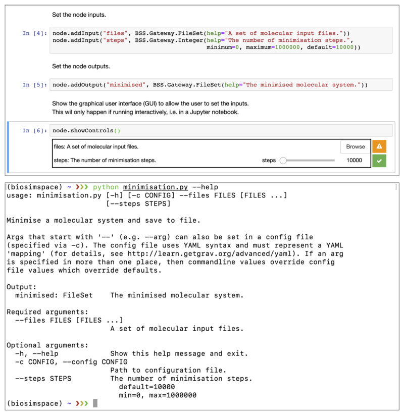

Nodes¶
The building blocks provided with BioSimSpace can be used to write interoperable workflow components, or nodes. Typically, a node will perform a single, well-defined, unit of work with clear inputs and outputs. The BioSimSpace.Gateway package acts as a bridge between BioSimSpace and the outside world, allowing a user to construct a node and define the input and output requirements, along with restrictions on their types and values.
Writing nodes¶
As an example, the following code snippet shows how we could write a node to perform an energy minimisation on a molecular system loaded from file:
import BioSimSpace as BSS
# Initialise the Node object.
node = BSS.Gateway.Node("Minimise a molecular system and save to file.")
# Set the node author and license.
node.addAuthor(name="Lester Hedges",
email="lester.hedges@bristol.ac.uk",
affiliation="University of Bristol")
node.setLicense("GPLv3")
# Set the node inputs.
node.addInput("files", BSS.Gateway.FileSet(help="A set of molecular input files."))
node.addInput("steps", BSS.Gateway.Integer(help="The number of minimisation steps.",
minimum=0, maximum=1000000, default=10000))
# Set the node outputs.
node.addOutput("minimised", BSS.Gateway.FileSet(help="The minimised molecular system."))
# Show the graphical user interface (GUI) to allow the user to set the inputs.
# This will only happen if running interactively, i.e. in a Jupyter notebook.
node.showControls()
# Load the molecular system using the user defined input "files".
system = BSS.IO.readMolecules(node.getInput("files"))
# Define the minimisation protocol using the user defined number of "steps".
protocol = BSS.Protocol.Minimisation(steps=node.getInput("steps"))
# Execute the process using any available molecular dynamics engine.
process = BSS.MD.run(system, protocol)
# Set the node output to the final configuration of the minimisation process.
# Note that the pass block=True to the getSystem call to ensure that the
# process finished before getting the final configuration. (It is possible
# to query the running process in real time when running interactively.)
# Note that the original file format of the system is preserved on write.
node.setOutput("minimised", BSS.IO.saveMolecules("minimised",
process.getSystem(block=True), system.fileFormat()))
# Finally, validate the node to make sure that outputs are set correctly
# and no errors have been raised. If running interactively, this will
# generate a download link to a zip file containing the node outputs.
node.validate()
Running nodes¶
BioSimSpace nodes are flexible in the way in which they can be used, with the same script working seamlessly from within a a Jupyter notebook or on the command-line. Typically, a user would a write a node as a fully documented, interactive Jupyter notebook, then save it as a regular Python script to run from the command-line. (In the section above we included a Python script representation of the node, which could be re-converted to a notebook using, e.g., p2j.) Any purely interactive elements included in the node, e.g. visualisations and plots, are simply ignored when the script is run in a non-interactive mode. To facilitate this dual-use the node.addInput method generates a custom ipywidgets based graphical user interface for interative use in Jupyter, or a custom argparse parser for handling command-line arguments. The following figure shows the example node above running within a Jupyter notebook (top) and from the command-line (bottom).
{kind=link}
When working interactively, BioSimSpace also provides functionality for interacting with processes while they are running. This allows the user to monitor the progress of a simulation and generate near real-time plots and visualisations.
While BioSimSpace isn’t intended to be a workflow manager it does provide
a means of chaining together nodes by passing the output of one node as the
input to another. For example, given the following YAML configuration file,
config.yaml:
files:
- amber/ala.crd
- amber/ala.top
it would be possible to run a minimisation followed by an equilibration as follows:
python minimisation.py --config config.yaml && python equilibration.py --config output.yaml
Nodes can also be accessed from within BioSimSpace itself, allowing the user access to existing functionality as building blocks for more complex scripts. For example, the minimisation node can be run from within BioSimSpace as follows:
# Create a dictionary of inputs to the node.
input = {"files" : ["amber/ala.crd", "amber/ala.top"], "steps" : 1000}
# Run the node and capture the output as a dictionary.
output = BSS.Node.run("minimisation", input)
(Note that, by default, a node library is created in a hidden _nodes
directory wherever BioSimSpace is installed, e.g.
/usr/local/lib/python3.7/site-pacakges/BioSimSpace/Nodes/_nodes. To
set a custom directory, use the
BioSimSpace.Node.setNodeDirectory
function.)
Common Workflow Language¶
It is also possible to export a node as a
Common Workflow Language (CWL) wrapper.
For example, using the minimisation.py example from the previous section:
python minimisation.py --export-cwl
This will write a wrapper called minimisation.cwl to the current directory.
The node could then be run as part of a CWL workflow using something like:
cwltool minimisation.cwl config.yaml
Here config.yaml is a YAML configuration file, e.g.:
files:
- {class: File, path: /home/lester/BioSimSpace/demo/amber/ala/ala.top}
- {class: File, path: /home/lester/BioSimSpace/demo/amber/ala/ala.crd}
steps:
1000
At present, using BioSimSpace within CWL is limited to the use of
BioSimSpace.Gateway.File
and
BioSimSpace.Gateway.FileSet
requirements, which cover the majority of use cases. Due to the way in which
CWL works, the prefix used for output files must match the name used for the
requirement, e.g. if a requirement was called output, then a file might be
named output.txt. This allows the use of glob in the CWL outputBinding
functionality. This requirement is automatically enforced so that files will
be renamed when a mismatch is found.
Any unit based input requirement, e.g.
BioSimSpace.Gateway.Length, should be
specifing as a CWL string type to allow for greatest flexibility, e.g.:
length:
25 Angstroms
Forwards compatibility¶
To ensure that BioSimSpace nodes are forwards compatible as new features are
added all sub packages can query their own functionality and present this to
the user. For example, calling
BioSimSpace.IO.fileFormats
returns a list of the currently supported molecular file formats,
BioSimSpace.Solvent.waterModels
returns a list of the supported water models, etc. These values can be passed as
the allowed keyword argument when setting an input requirement of a node, ensuring
that the node supports the latest functionality of the package version that is
installed. The following code snippet shows a node that can be used to convert
to any supported molecular file format, which will continue to work as
additional formats are added.
import BioSimSpace as BSS
# Initialise the Node object.
node = BSS.Gateway.Node("Convert between molecular file formats.")
# Set the node author and license.
node.addAuthor(name="Lester Hedges",
email="lester.hedges@bristol.ac.uk",
affiliation="University of Bristol")
node.setLicense("GPLv3")
# Set the node inputs.
node.addInput("files", BSS.Gateway.FileSet(help="A set of molecular input files."))
node.addInput("file_format", BSS.Gateway.String(help="The format to convert to.",
allowed=BSS.IO.fileFormats()))
# Set the node outputs.
node.addOutput("converted", BSS.Gateway.File(help="The converted file."))
# Show the graphical user interface to allow the user to set the inputs.
# This will only happen if running interactively, i.e. in a Jupyter notebook.
node.showControls()
# Load the molecular system using the user defined input "files".
system = BSS.IO.readMolecules(node.getInput("files"))
# Convert the system to the chosen format and set the output.
node.setOutput("converted",
BSS.IO.saveMolecules("converted", system, node.getInput("file_format")))
# Validate the node.
node.validate()
The following figure shows how the allowed=BSS.IO.fileFormats() argument is
translated into a dropdown menu for the Jupyter GUI (top), or using the choices
option of argparse on the command-line (bottom). This means that the script is
adaptive to the support of additional file parsers in future without need for
modification.
{kind=link}
Examples¶
A set of example nodes are available on our notebook server.